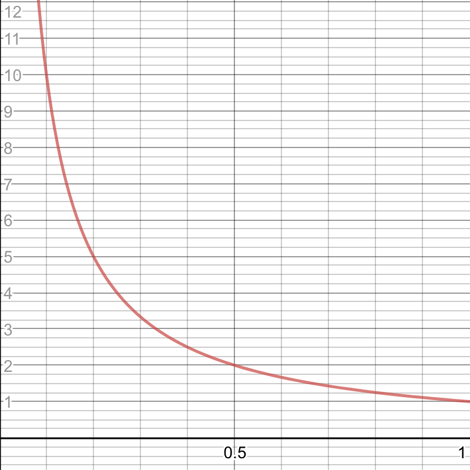
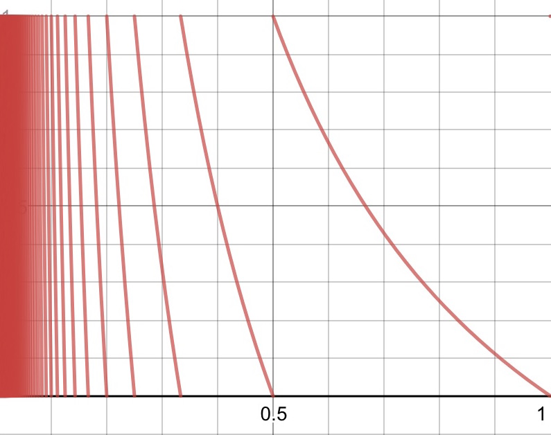

Step X: Texture
Let's map a texture onto the canvas.
We need 2 uniforms: a texture unit and a resolution.
The texture2D function expects a texture and a vec2 with normalized components. For the coordinates, we'll take the current pixel location and divide by the resolution.
[x] 0..400 => 0..1
[y] 0..200 => 0..1
Looks like our texture is getting stretched. Well, what do you expect? The canvas is a rectangle and the texture is a square. We're doing a 1:1 mapping, so yeah, it'll get stretched. You'll also notice the texture is also upside down! What the shit? Well, that just won't do...
Note how we're using GLSL's syntactic sugar to perform component-wise division. If you are feeling verbose, you can write the division thus:
Wait a second! Doesn't texture2D do texture repeating? Can't we pass in non-normalized values? Yes. OpenGL and WebGL have a function we can call to set the texture repetition parameter (repeat,stretch,etc.). Try multiplying the uv.x component by something greater than 1. What happens?
We're going to pretend that texture2D expects normalized values, so we'll just take care of 'wrapping' the values ourselves.
Step X: Texture Flip
WebGL has this weird behaviour where textures are flipped. We can actually solve this by getting the rendered from p5 and calling a function that tells WebGL if we want textures fippped.
But since we have power of shaders, we can do the flip within the shader itself. Since we know that the maximum value of y is 1, we start with 1 and subtract whatever the y value is. This remaps the y-coordinates from 0..1 to 1..0.
Step X: Repeating the Texture
Examine the final demo and you can see that the texture is repeated. We can easily achieve this by using the built-in mod function. Not surprisingly, mod accepts 2 values.
We scale the x component by 4 and apply mod. This ensures the final value will range from 0 to 1. The value 4 was arbitrary just to demonstrate that indeed the texture does repeat. Experiment with some values here as well as the second argument for mod. What does 2.0 do? 0.5?
Step X: Perspective
Hold onto your butts. This is where shit gets real. We're going to dive head-first into the magic of the demo. The core 'magic' of the tunnel is the perspective that gets created. How is this done?
We need to somehow repeat the texture more frequently the closer it is to the center of the canvas. Since we don't have a circular texture yet, we're going to make the texture repeat 'faster' as it appears closer to the left edge.
Alright, so there's the magic: Go to Google and plug in this formula:
Below is a graphical representation as well as a table to help better understand the relationship between x and y.
| x | |
|---|---|
| 0 | 0 |
| 0.0001 | 10000 |
| 0.125 | 8.0 |
| 0.25 | 4.0 |
| 0.375 | 2.6666 |
| 0.5 | 2.0 |
| 0.625 | 1.6 |
| 0.75 | 1.3333 |
| 0.875 | 1.142 |
| 1.0 | 1.0 |
This graph show that y has a sharp decline and tends towards infinity as x increases in size. However our x ranges from 0 to 1, not 0 to 26 as the table suggests.

Step X: Making it Circular
....
Step X: Fog
The center of the demo has this mushyness. Let's fix that. And the solution is pretty simple. We're just going to cover it up :)
Step X: Texture
Finally, we're going to replace the debug image to the actual texture.
Step X: Adding Movement
Let's make it seem like the user is moving through the tunnel.
Step X: Adding Interactivity
What we have is great, but let's go one step further.
Play time!
- Remove the fog from the final demo. Note what the center looks like. (hint: it's mush)
- Make the tunnel spin
- Add a bump map texture